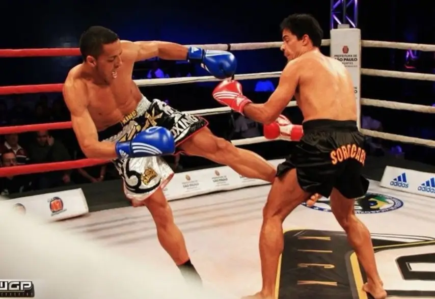
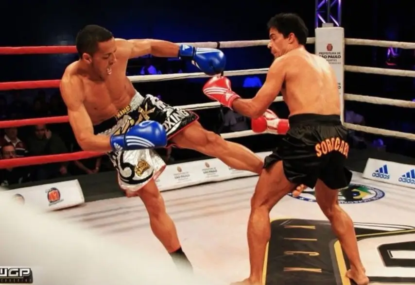

O APOIO DO MESTRE PAULO
O Mestre Paulo Góes foi o divisor de águas que oficializou o nosso sonho. Ele abraçou meu trabalho, regularizou nossa equipe e nos deu a certificação necessária para crescer. Hoje, retribuímos esse apoio levando o Muay Thai para toda a nossa comunidade.
A HISTÓRIA DO NOSSO MESTRE
Conhecer o Mestre Paulo Góes foi o que transformou meu esforço em uma estrutura profissional. Referência no mundo da luta, o Mestre tem uma trajetória de vida marcada pela superação, passando por desafios até ser um dos nomes mais respeitados do Muay Thai. Sua experiência é a base que hoje sustenta a qualidade técnica e a disciplina do nosso CT.
ASSISTA COMPLETO JÁ!